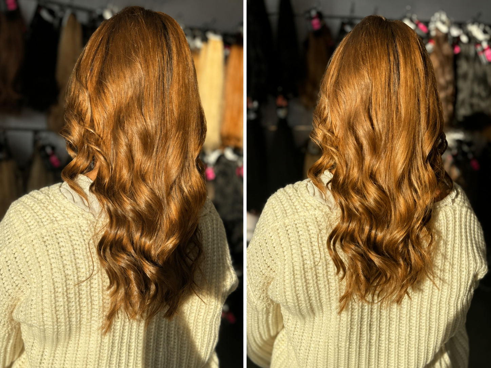
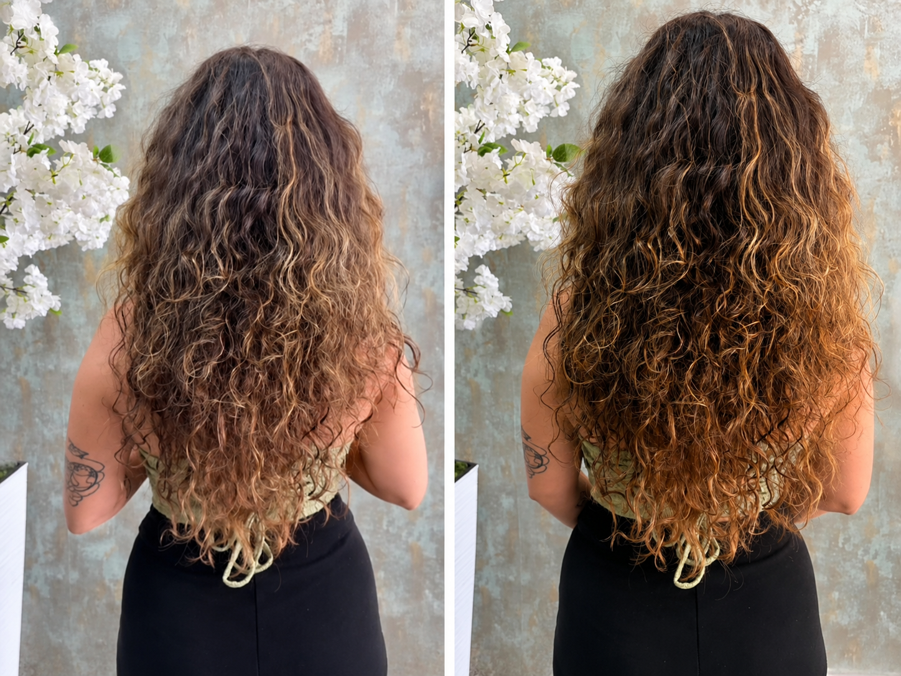
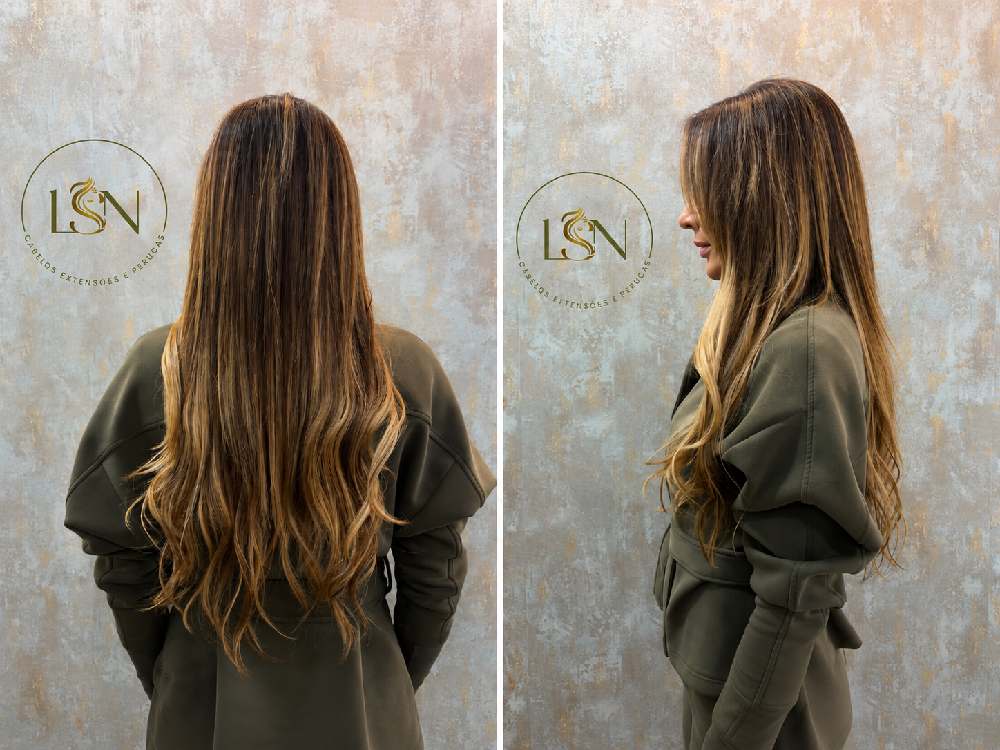
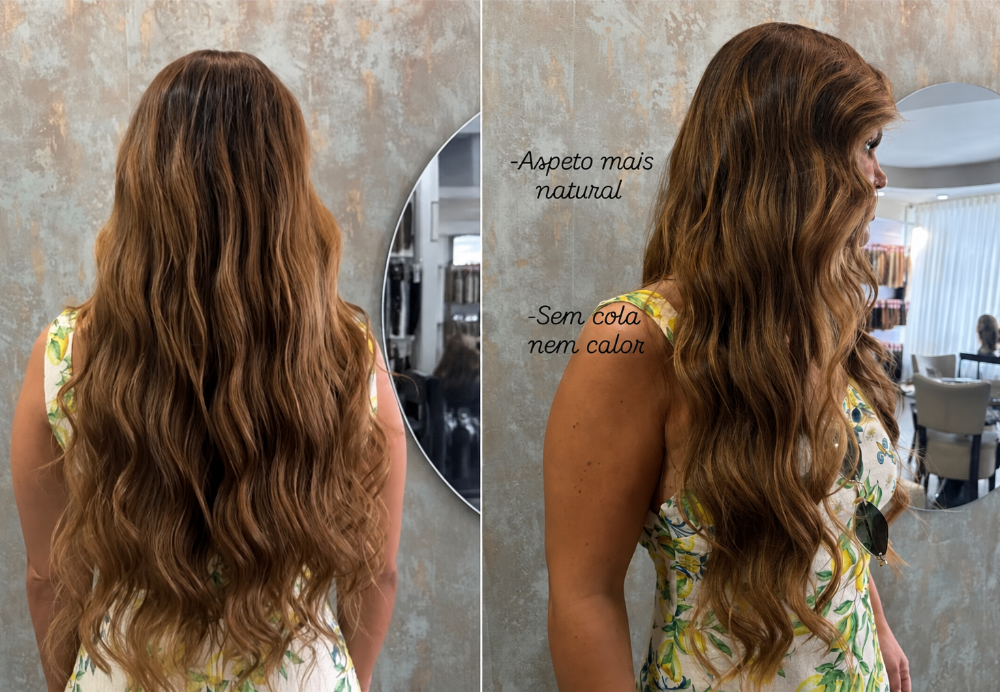
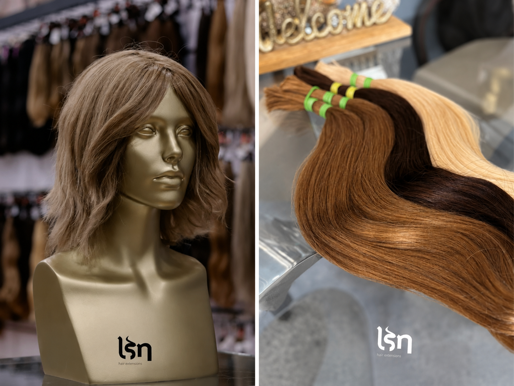
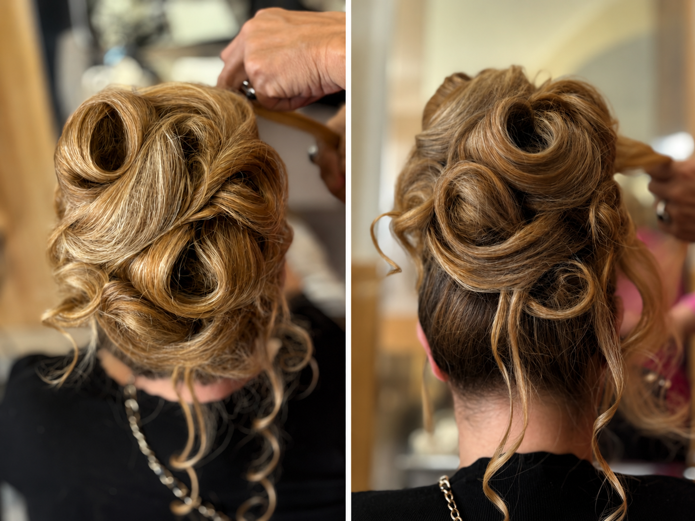

NOSSOS SERVIÇOS
Extensões Tape‑In

Fitas adesivas invisíveis para um comprimento e volume instantâneo, com um acabamento natural e elegante. Manutenção fácil a cada 6–8 semanas.
Extensões Queratina

O toque de sofisticação que o seu cabelo merece. Aplicadas mecha a mecha com queratina, oferecem durabilidade e movimento natural, perfeitas para um look glamoroso e duradouro.
Extensões Clip‑In

Mude de look quando quiser! Fáceis de colocar e retirar, ideais para festas ou mudanças temporárias. Transforme o seu cabelo em segundos, sem compromissos.
Extensões Weft

Volume e comprimento de forma duradoura. Faixas de cabelo costuradas para um resultado natural e elegante, com manutenção profissional para prolongar a beleza do seu cabelo.
Perucas e Próteses

Confiança e estilo em qualquer momento. Cabelo natural ou sintético de alta qualidade, para quem procura conforto, praticidade e um visual impecável.
Manutenção

Mantenha as suas extensões sempre perfeitas! Serviços de limpeza, reposição e ajustes, garantindo brilho, durabilidade e um cabelo saudável.